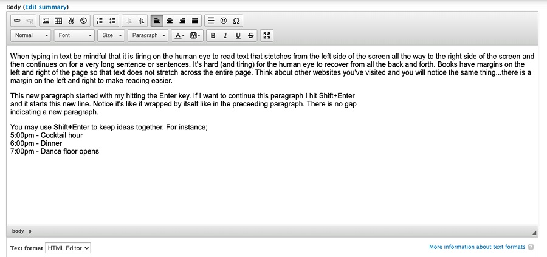

Web Page Design - Tips & Tricks
Web page design is a career. It is not something that can be taught in a short tutorial but don't let that hinder you. Anyone can create a pleasing page. These tips are things you "see" daily as you go to different websites. You just don't realize you're seeing them.
Here are some things to keep in mind as you create a basic page or make event calendar entries.
- Accessibility - Make your links accessible. While accessibility is a topic unto itself the shortened version is you want to avoid uninformative link phrases. Links are more useful when they make sense out of context. Authors should stay away from non-informative link phrases such as;
- here
- click here
- more
- read more
- link to ...
- info
- To see June's event calendar click here - Out of context, the word 'here' means nothing to the end-user and it makes your page look like it's from the 1990's.
- https://www.raleighhog.com/calendar?month=2023-06 - A URL is neither human readable or screen-reader friendly.
- June's event calendar - Clear to the reader where the link will take them and what they will see.
- Links - It's best if a link to another website opens in a different tab. This way the user does not leave your website to get lost in a rabbit hole of another website. The steps below show how to have a link open in another tab.
- Images - Keep images on your page at a reasonable size. No one likes to scroll left and right and up and down in order to see an image. Not everyone will be using a desktop computer to view your website, some use an Apple® or Android™ tablet. - This is especially important when placing images in event calendar entries. A lot of members use a smartphone and the HOGScan smartphone app to view the calendar and a large image means a lot of scrolling just to see the text of the event.
- Text emphasis - Occasionally there may be something in your text that you want to emphasize. Use caution when doing so. While making a word or phrase bold is okay, you want to avoid underlining and/or making the font color the same color as a link as it will cause confusion for anyone reading the page. - Avoid setting the emphasized word or phrase to a larger font. It's not pleasing to the human eye to be jolted with a larger font in the middle of a sentence. - One form of emphasis is the name of your ride destination. In print, the title or name of a place is generally in italics.
- Tokens - The HOGScan tokens are fine to use in basic pages. They help eliminate typo's, keep information consistant and in some instances allow you to have the most current documentation from National. However, do not use tokens in event calendar entries. They translate when viewing the calendar with a computer or tablet but not when viewing the calendar with the HOGScan smartphone app.
EnterversusShift + Enter- This is easier seen rather than explained. - Hitting theEnterkey will move the cursor down and begin a new paragraph. - Holding down theshiftkey and simultaneously hitting theenterkey (commonly referred to asShift + Enter) causes a line break. The text continues on a new line, not a new paragraph. Reference the image below for a visual demonstration. - Sandbox - Use your development environment to practice building/creating a new basic page. The sandbox environment is not seen by chapter members and any work done here will not affect the production environment that members see.
The sandbox environment starts with
dev. For instance, for Raleigh HOG, the sandbox environment is https://dev.raleighhog.com Login credentials are the same as your production environment.